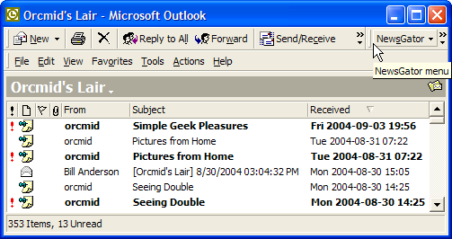
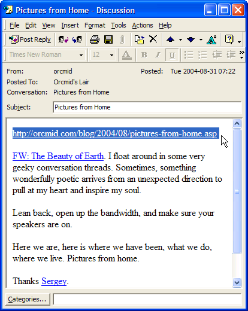
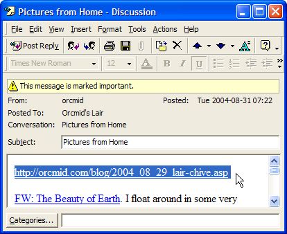

Incident Report X040901
Degraded Blogger Feed
Orcmid's Lair Impact
|
|
Incident Report X040901 |
This note collects all of the experiences around incident X040901 as they played out on Orcmid's Lair.
1. Situation
2. Observations
2.1 All Right, What's Different?
2.2 What's the Impact?
2.3 What's Changed To Cause This Difference?
3. Who Else Is Effected?
4. What Rules?
5. Recovering
On Friday evening, 2004-09-03 at around 19:56 (pdt, gmt-0700), I posted the article "Simple Geek Pleasures" to the Orcmid's Lair Blog. I may have checked the site to ensure that the article was published properly, as I often do. I did not check anything else. The posting was uneventful and I ended my computer work for the evening.
This was my first post to Orcmid's Lair since "Pictures from Home" around 2004-08-31at 07:22 (all times are presented here in U.S. Pacific Daylight Time, gmt-0700, for consistency).
On Saturday morning, 2004-09-04 some time after 08:57, I downloaded new articles from my news-feed subscriptions using NewsGator in Outlook 2000. While NewsGator retrieved updates in the feeds I subscribe to, I also used Outlook to download recent mail.
I then proceeded to clean out my e-mail (it was all spam) and then work through my 138 news-feed subscriptions, starting backward from the subscription at the end of the alphabet, Yahoo! News - World.
When I got to Orcmid's Lair, I was expecting to see one new post, "Simple Geek Pleasures." Instead, there were 13. Twelve of my earlier articles were reposted as having been updated in some way. That's every one of my recent articles back to "Computer Pioneer Bob Bemer" dated 02:07 (09:07 gmt) Friday June 25, 2004.

How my subscription to the Orcmid's Lair feed appeared on Saturday morning. [A Reconstruction: The importance flags were set and the "Mark as Unread" settings were restored after the material was first examined and the manual Technical Difficulties #2 entry was posted in the feed at 10:07, Saturday.]I see updates of blog entries from time to time. Many times, I can't see any difference between different versions of the article feed, and I don't bother to go check the article post itself. I usually do keep the most-recently fed version (when I can tell) and delete earlier ones, just in case there is some material difference.
I hadn't changed any of my articles. I had changed something.
When I worked on teams that supported their own software, it was an article of faith that when an user or administrator said they hadn't changed anything, it probably wasn't true. The folklore around the Unix uucp utility was that its major first use was to find the changes that had been made to a remote Unix system so that it could be directly checked for any alterations as part of troubleshooting a complaint. User testimony on the matter was simply unreliable.
On Thursday, September 2, I had tested and activated a new master template (.txt file archive version) for Orcmid's Lair pages. The September 3 posting was the first posting made with that template in effect.
It made sense to consider that I had made some change in the template that led to a difference in the feed posting.
On accessing the updated web page of the blog, as it appeared Saturday morning, I could see no impact. Everything seemed in order and the new template had performed exactly as expected. The default page, the archive pages, and the post pages are all correctly hyper-linked in the way that applies under the option of having separate post pages created for each entry.
The only difference is unrelated to the page template and is confined to the site feed: The permalink provided in the site feed is not the same as the (precise) one used on the article page.
When I compared old and new entries in the feeds for unchanged articles, there has been a change in the feed version:

The original article as represented in a feed entry produced on August 31. The selected URL is the proper link to where the article is posted on the web.The update for this entry that arrived on Saturday has a different link for the location of the post:

The replacement feed entry produced on September 3. The selected URL is for the archive page (2004_08_29_lair-chive.asp) that contains an archive copy of the article (but it is not the location of the article in the page). The article remains available at its posted location where it is linked to in the original feed entry.I don't have any explanation for this. This has nothing to do with master templates for the blog pages. It is something determined entirely by Blogger.
Fortunately, I have a backup (.xml document) of the Atom feed. The most-recent article in the backup is my posting of "Candling Phish."
It gives me an entry that is wrapped-up as follows:
<entry> <link href="http://www.blogger.com/atom/3896669/109382580329781912" rel="service.edit" title="Candling Phish" type="application/x.atom+xml"/> <author> <name>orcmid</name> </author> <issued>2004-08-29T18:01:00-07:00</issued> <modified>2004-08-30T01:04:00Z</modified> <created>2004-08-30T00:30:03Z</created> <link href="http://orcmid.com/blog/2004/08/candling-phish.asp" rel="alternate" title="Candling Phish" type="text/html"/> <id>tag:blogger.com,1999:blog-3896669.post-109382580329781912</id> <title mode="escaped" type="text/html">Candling Phish</title> <content mode="escaped" type="text/html" xml:base="http://orcmid.com/blog/" xml:lang="en-US" xml:space="preserve"> <!-- Content omitted for brevity ... -- > </content> </entry>The "alternate" link provides the correct permalink for the article.
At the time that I noticed the incident, I backed up my site feed (.xml document) again. Here is the entry in the latest feed produced for Orcmid's Lair:
<entry xmlns="http://purl.org/atom/ns#"> <link href="http://www.blogger.com/atom/3896669/109382580329781912" rel="service.edit" title="Candling Phish" type="application/atom+xml"/> <author> <name>orcmid</name> </author> <issued>2004-08-29T18:01:00-07:00</issued> <modified>2004-08-30T01:04:00Z</modified> <created>2004-08-30T00:30:03Z</created> <link href="http://orcmid.com/blog/2004_08_29_lair-chive.asp" rel="alternate" title="Candling Phish" type="text/html"/> <id>tag:blogger.com,1999:blog-3896669.post-109382580329781912</id> <title mode="escaped" type="text/html">Candling Phish</title> <content mode="escaped" type="text/html" xml:base="http://orcmid.com/blog/" xml:space="preserve"> <!-- ... -->The "alternate" link provides an inprecise link for the article, finding a correct archive page, but not the correct fragment on that page.
Wondering if this is a widespread change, I think I will check on other blogs that are produced by Blogger.com. As I scroll through my subscriptions looking for Nancy White's Full Circle Associates blog, I see that Google Blog has seven new postings. My, my.
Nancy White's recent feed entries, following a number of duplicates that I simply eliminated when I noticed them on Friday. I have a copy of her feed. Her latest entry was produced on Thursday, September 2 at 19:22:51 (still pdt), and it shows the archive link rather than the article-post link.
Google Blog's latest feed occured at 18:52 on Friday. It shows the defect and the refeeding of six earlier articles. One of the linked archive pages in the Google feed entries is actually non-existent as of 2004-09-06 08:30. As of 2004-09-10 08:30 the archive page is present but the post page is not and the link from the default page to the permalink is left dangling.
I only noticed one other Blogger-intermediated blog that showed the re-feeding syndrome when a post was made during the period of the degraded entry links.
My original title of this section was "What Are the Rules?" Then I saw the wonderful ambiguity of the shorter title and chose that.
My next question, noticing that the problem remains as of 08:30 on Monday, September 6 (the U.S. Labor Day holiday), is whether this change is on purpose and thought to be consistent with Atom site-feed guidelines.
It may not matter, since having a precise permalink (to the post or to the proper fragment on an archive page) is already the established expectation. Still, I'm curious whether the specifications being used for interoperability of Atom feeds nail this down or not.
On Tuesday, September 7, recognition of the defect was posted on the Blogger Support page. Sometime on Thursday, September 9, the Blogger Atom feed generator was restored to the earlier, preferable behavior. My only posting that evening caused feed entries to have the correct permalink. This resulted in duplicate unread-entry arrivals for those articles that had been posted after the incident began.
Because I could not tell how many of the older feed entries had been replaced by ones with the correct permalink (they don't look like updates to my feed reader), I inspected the Atom feeds to see how much was corrected. The old-style, correct permalinks are re-generated for those entries that are currently on my default page. That means every entry down to the August 29 "All Clear #1" posting, and none earlier.
But on September 2, there were incorrect refeedings of all articles back to the June 25 "Computer Pioneer Bob Bemer" remembrance.
What to Do?
The first thing I think to do is make an update of each article that was last fed with an incorrect permalink and that is not covered in the current feed. It doesn't work. Although the Blogger feed is regenerated, it stops with regeneration of those entries on my current default page, so the older articles are not actually corrected in the feed. The articles are updated. The feed doesn't reflect the changes.
I prepare myself to shrug it off and leave those few broken feed entries that anyone might still have simply remain out there in the cyber-ether, gathering dust or moss or whatever.
That nags at me as incomplete work, so my next thought is to see if I have enough copies of the Atom feed documents in my repository to be able to splice together a feed and put it into effect manually. Yes I do.
That's what's next. I am going to splice together the entries of the latest feed and the last good entries for ones that were once replaced by bogus ones, and drop it in place of the Atom feed for 24 hours. I'll even make up a little notice about it:
Site Feed Reissued
This Orcmid's Lair Atom feed is a reissue that corrects
all entries ever generated while there was a problem
with permalinks for feed articles. These articles may
appear as duplicates in your feed reader. They are.
They are also the correct entries to retain if you want to
keep any of them around.
This feed update will remain in place for 24 hours
after which new posts will lead to generation of new
feeds consisting of only the most-recent articles.
I have constructed the appropriate feed and now it remains to see if it works.
| You are navigating Orcmid's Lair |
created 2004-09-04-14:41 -0700 (pdt) by orcmid |